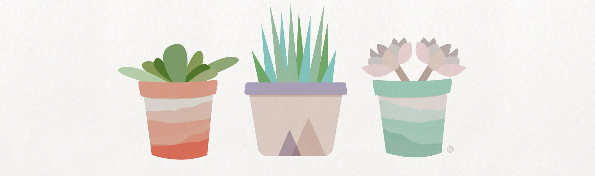
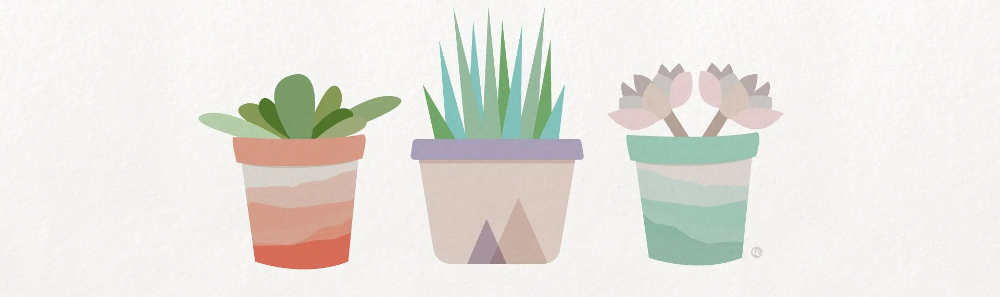

From a young age, I've been captivated by the intricate beauty of nature, with a particular
fascination for the plant kingdom. As I wandered through lush gardens and forests, I found
myself drawn to the vibrant colors, diverse shapes, and remarkable adaptations of plants. This
passion has blossomed into a dedicated pursuit of knowledge as I study botany, where I am
immersed in the wonders of plant life and the vital role it plays in our ecosystem. Each class,
field trip, and research project fuels my enthusiasm and further solidifies my ambition
to become a botanist.
In my studies, I delve into everything from the microscopic world of plant cells to the far-
reaching impacts of global climate change on flora. My time spent in the lab and out in the field
has highlighted the importance of plants in sustaining life on Earth, and I am eager
to contribute to this field. I dream of discovering new plant species, developing sustainable
practices for agriculture, and perhaps even aiding in the conservation of endangered plants. I
believe that plants are not just passive elements of our environment, but rather, they are
vibrant, living entities that have stories to tell and solutions to offer.
As I forge my path toward becoming a botanist, I am excited about the endless possibilities
that await me. I envision a future where I can blend my love for plants with innovative research
to create a positive impact on our planet. Whether it's through educational outreach,,
collaboration with fellow scientists, or hands-on conservation efforts, I am determined to make
a difference. The world of botany is not just my academic pursuit; it is my passion, my purpose,
and the key to an amazing future that I am eager to explore.
 
